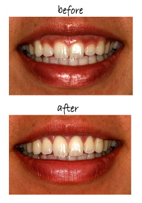
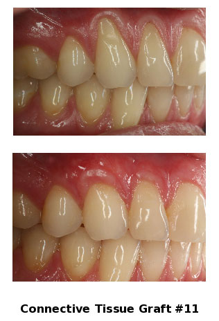
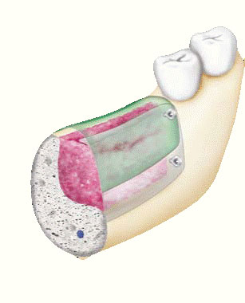
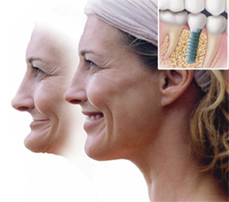

The Best in Dental Implant Care
Dental implants are changing the way people live! With them, people are rediscovering to eat, speak, laugh, and enjoy life. Get more information about implants and see if they are right for you. To view our interactive presentation [click here] or see the full page. [Dental Implants]
LANAP© - Alternative to Extraction
The LANAP® Procedure is an amazing breakthrough in periodontal treatments. If you have been told you need scalpel and suture gum surgery, there's a laser alternative you need to learn about.
If you're like 100 million other Americans, you could be one of 50% of Americans who have periodontal disease, the major cause of tooth loss in adults. Periodontal disease starts off as plaque, an opaque film which eventually hardens, forming tartar or calculus.
Calculus deposits harbor bacteria which infect the gums. In early stages, this is called Gingivitis, characterized by red, swollen gums that bleed when you brush your teeth. Many people experience bad breath and an unpleasant taste in their mouths as well. Unchecked, Gingivitis progresses to Periodontitis, a much more serious form of the disease where periodontal pockets are formed, separating teeth from the gums and supporting bone structure. Without treatment, infection becomes severe and the pockets deepen, resulting in tooth loss. [more info]
Digital Impressions - The latest technology
iTero Scanner

The iTero Scanner is one of the most exciting achievements in dentistry to date. This device is capable of mapping your mouth to help dental specialists treat you more effectively. The procedure is comfortable, reliable, safe and accurate. Cook Periodontics is proud to offer iTero as a convenient and better alternative to traditional impressions. The procedure is very popular among our patients and only takes about 5 minutes!
[see more]Crown lengthening

Crown lengthening (or crown exposure) is required when your tooth needs a new crown or other restoration. The edge of that restoration is deep below the gum tissue and not accessible. It is also usually too close to the bone or below the bone.
The procedure involves adjusting the level of the gum tissue and bone around the tooth in question to create a new gum-to-tooth relationship. This allows us to reach the edge of the restoration, ensuring a proper fit to the tooth. It should also provide enough tooth structure so the new restoration will not come loose in the future. This allows you to clean the edge of the restoration when you brush and floss to prevent decay and gum disease. The procedure takes approximately one hour. [see more]
Scaling & Root Planning
The initial stage of treatment is usually a thorough cleaning that may include scaling to remove plaque and tartar deposits beneath the gum line.
The tooth roots may also be planed to smooth the root surface allowing the gum tissue to heal and reattach to the tooth. In some cases, the occlusion (bite) may require adjustment.
Antibiotics or irrigation with anti-microbials (chemical agents or mouth rinses) may be recommended to help control the growth of bacteria that create toxins and cause periodontitis. In some cases, Dr. Cook may place antibiotic fibers in the periodontal pockets after scaling and planing. This may be done to control infection and to encourage normal healing.
When deep pockets between teeth and gums are present, it is difficult for Dr. Cook to thoroughly remove plaque and tartar. Patients can seldom, if ever, keep these pockets clean and free of plaque. Consequently, surgery may be needed to restore periodontal health.[see more]
Gum Grafting

When recession of the gingiva occurs, the body loses a natural defense against both bacterial penetration and trauma. When gum recession is a problem, gum reconstruction using grafting techniques is an option.
When there is only minor recession, some healthy gingiva often remains and protects the tooth, so that no treatment other than modifying home care practices is necessary. However, when recession reaches the mucosa, the first line of defense against bacterial penetration is lost.
[see more]
Bone Grafting

Over a period of time, the jawbone associated with missing teeth atrophies or is reabsorbed. This often leaves a condition in which there is poor quality and quantity of bone suitable for placement of dental implants. In these situations, most patients are not candidates for placement of dental implants.
Today, we have the ability to grow bone where needed. This not only gives us the opportunity to place implants of proper length and width, it also gives us a chance to restore functionality and esthetic appearance. [see more]
Cosmetic Periodontal Surgery
These procedures are a predictable way to cover unsightly, sensitive, or exposed root surfaces and to prevent future gum recession. If you are unhappy with the appearance of short unsightly teeth this can be greatly improved by a combination of periodontal procedures by Dr. Cook and cosmetic dentistry by your dentist.[see more]
Overdentures

Implant-placed overdentures lock the denture in place, providing people with the peace of mind that their dentures will not slip when they speak or eat in public.
The enticing aroma of a thick, juicy steak is a temptation most people often avoided because there dentures made the meat difficult to chew. With implants placed to support dentures you no longer need to be cautious of the foods you eat.
An implant-supported overdenture requires that implants to be placed into the jaw. The implants bond to the jawbone forming an anchor. Full bridges or dentures are created to attach to the implants, literally locking the teeth replacement into place. [see more]"My implant-placed overdentures have made my life more pleasurable, I felt practically no pain in having them placed, and am very glad that I did it," said Norma of Wilmington, NC. Now I can eat caramel at a party and not have to worry about my dentures sticking together and prying them apart.
Other Services
Guided Tissue Bone Regeneration
Guided tissue bone regeneration regenerates the previously lost gum and bone tissue. Most techniques utilize membranes that are inserted over the bone defects. Some of these membranes are bio-absorbable and some require removal. Other regenerative procedures involve the use of bioactive gels.
Osseous Surgery
Traditionally, gum disease is treated by eliminating the gum pockets. The infected gum tissue is trimmed away and uneven bone tissue re-contoured. Although this is still an effective way of treating gum disease, new and more sophisticated procedures are used routinely today.
Ridge Preservation
Careful management of extraction sockets after tooth extraction prevents unsightly bone loss and provides a better cosmetic outcome for tooth replacement.